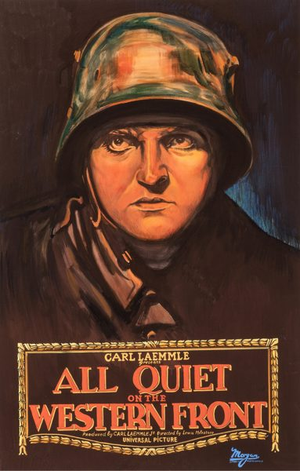
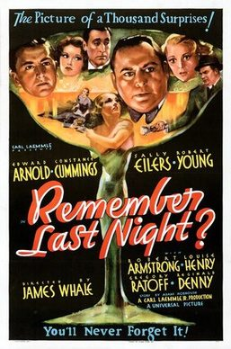
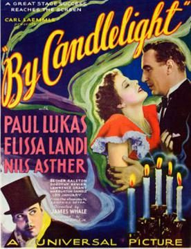
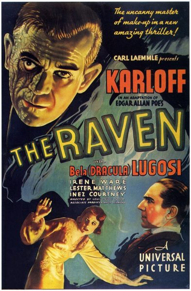
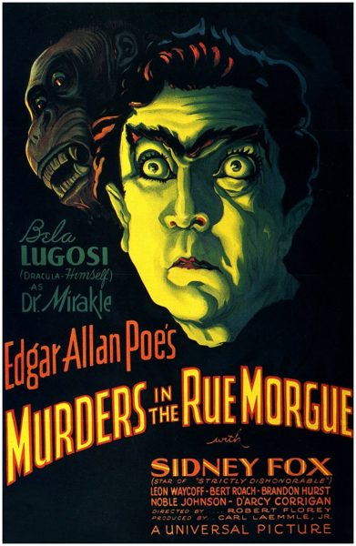
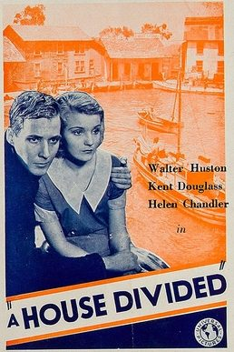
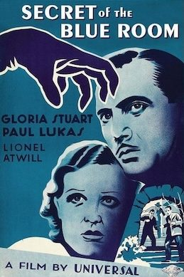

THE STANFORD THEATRE
Now Showing
·
Upcoming
·
Past
·
Search
September 12 - November 2, 2012
UNIVERSAL PICTURES Part 1: 1930-1935
18 bills
September 12 - 13
Kiss Before the Mirror (1933)
Only Yesterday (1933)
105 min
September 14 - 16

All Quiet on the Western Front (1930)
136 min
Bombay Mail (1934)
September 19 - 20
Little Man, What Now? (1934)
98 min
The Good Fairy (1935)
98 min
September 21
The Cat and the Canary (1927)
82 min
September 22 - 23
The Old Dark House (1932)
70 min
Dracula (1931)
75 min
September 26 - 27
Waterloo Bridge (1931)
81 min
The Impatient Maiden (1932)
72 min
September 28 - 30
One More River (1934)
88 min
Counsellor at Law (1933)
82 min
October 3 - 4

Remember Last Night? (1935)
81 min

By Candlelight (1933)
70 min
October 5 - 7
The Black Cat (1934)
65 min
The Mummy (1932)
73 min
October 10 - 11

The Raven (1935)
61 min

Murders in the Rue Morgue (1932)
61 min
October 12
Foolish Wives (1922)
142 min
October 13 - 14
Magnificent Obsession (1935)
108 min
Imitation of Life (1934)
111 min
October 17 - 18
The Bad Sister (1931)
Seed (1931)
97 min
October 19 - 21
The Invisible Man (1933)
71 min
Mystery of Edwin Drood (1935)
87 min
October 24 - 25
Ladies Must Love (1933)
70 min

A House Divided (1931)
70 min
October 26 - 28
Bride of Frankenstein (1935)
78 min
Frankenstein (1931)
71 min
October 31 - November 1
Werewolf of London (1935)
75 min

Secret of the Blue Room (1933)
66 min
November 2
Phantom of the Opera (1925)
106 min